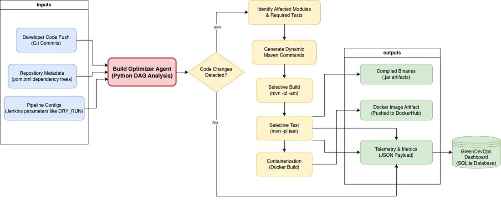

Research journey
Milestones from proposal to final research stage
The project evolved from an initial four-component idea into a final integrated Green DevOps framework. Dates are shown only where confirmed by supplied sources.
Project Proposal
The proposal introduced Green DevOps - Energy Efficient CI/CD Pipeline and assigned the four components: Release Management, Deployment Stage, Operations Stage and Monitoring Stage. It framed the initial problem around full builds/tests for small changes, carbon-blind execution and the need to coordinate sustainability decisions across CI/CD and cloud operations.
At this stage, Release proposed change-impact analysis, artifact reuse, incremental builds, risk-based selective tests and XGBoost-based carbon-aware scheduling. Deployment proposed an energy profiler and AI decision engine. Operation proposed LSTM workload prediction and energy-aware scaling. Monitoring proposed stage-level sustainability metrics and feedback into earlier stages.
Panel comments: as a group, manage time next time. No major issues. Release planning included XGBoost for carbon-emission prediction. Deployment and Operations were marked as fine. Monitoring was asked to clarify the ML technique.
Progress Presentation 1
PP1 recorded practical progress. Release had implemented change impact analysis, selective build execution and selective test execution using Jenkins, Git diff, Python, Maven and reporting into a research dashboard. Deployment had implemented a profiler and comparator to sample CPU and memory, estimate kWh and estimate CO2. Operation had implemented workload prediction and pod scaling progress. Monitoring had implemented a monitoring framework, statistical anomaly detection and an Isolation Forest prototype.
PP1 still treated several items as next-phase work, including the carbon-aware release model, the deployment AI decision engine, job prioritization and monitoring analyst extensions. The panel feedback table did not require major implementation changes, but Monitoring was asked to clarify its ML technique.
Panel comments: No comments yet for all four components in the supplied workbook.

Progress Presentation 2
PP2 sharpened the integrated research gap: Green DevOps stages were often optimized independently, leaving disconnected carbon decisions. The stated objective became one framework with carbon-aware decisions across Release, Deployment, Operation and Monitoring while preserving delivery velocity, performance and SLA compliance.
The PP2 progress table listed Release carbon-aware AI model work, Deployment AI decision engine integration, Operation job prioritization and testing, and finalized Monitoring Isolation Forest anomaly models. PP2 also included an academic commercialization discussion, but this website does not present a product offer or subscription interface.
Panel comments: as one project, get expert feedback on the product before final evaluation. The other component comments state no major issues.
Final High-Level Architecture Diagram

Final journal / final research stage
The revised manuscript presents the final integrated framework and evaluation. Release combines module-level selective execution with LightGBM carbon-intensity classification. Deployment uses carbon measurement and ReAct-style decision support. Operation uses LSTM workload prediction, carbon estimation and priority-aware runtime recommendations. Monitoring creates baselines, Z-score analysis and Isolation Forest-based sustainability anomaly detection.
Final reported evidence includes LightGBM macro F1 0.9787, 47.7% mean release wall-clock reduction, 90.4% test skip rate, LSTM R2 0.946, LSTM MAPE 3.28%, and monitoring over 21 Jenkins runs producing 63 stage records.
Deployment validation completed after implementation: the decision log contained 242 decisions and 114 outcomes, with 87 LLM-path decisions matched to outcomes for confidence calibration. A separate reason-quality check scored 24 generated hints, of which 23 (95.8%) were factually valid (score 4 or higher). The deployment experiment also introduced a randomly routed five-percent deterministic fallback for A/B comparison and a historical strategy win-rate tool using the current hour-of-week when sufficient data exists. The confidence diagnostic did not show a reliable relationship between reported confidence and success in this sample, so these results are reported as validation evidence rather than a claim of calibrated confidence or a standalone deployment benchmark.
Final Assessment
The supplied panel-comments workbook contains a Final Presentation sheet, but no detailed comments are entered yet. This entry is reserved according to the official website guideline.
Viva
The supplied panel-comments workbook contains a Final Viva sheet, but no detailed comments are entered yet. Viva date and final presentation materials remain placeholders.